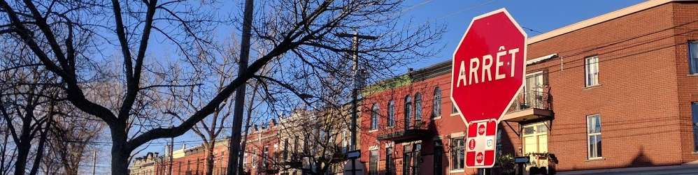

Magasinage18 décembre 2016
Ici, on ne fait pas du shopping, mais on magasine !
Tout est ouvert tout le temps
La plupart des commerces, petits comme grands, sont ouverts 7 jours sur 7, et pour certains jusqu'à tard.
À titre d'exemples, le Renaud-Bray (sorte de fnac plus orientée bouquins) à côté de chez moi est ouvert tous les jours de 9h à 22h.
Mon supermarché d'à côté, un Métro, est lui ouvert de 8h à 23h tous les jours. Certains ferment encore plus tard.
Et le "Sports Experts" (équivalent de Décathlon) de 10 à 21.
Certaines enseignes ferment plus tôt un des jours de la semaine, généralement le samedi. Trop sympas avec leurs employés :)
Dépanneur
Et puis si c'est fermé, il y a toujours les "dépanneurs", c'est-à-dire les épiceries !
C'est également là qu'on y achète ses cigarettes.
Et il y a toujours plein de choix de super bonnes bières locales.
Courses
Ce qui est "bein l'fun" ici, c'est qu'on trouve tout plein de produits américains comme français.
Y compris de la charcuterie. Et ils en font aussi (on en trouve de la très bonne, même). C'est juste assez dispendieux.
Par exemple il y a les cretons qui sont très bons : ce sont comme des rillettes, mais peut être en encore plus gras.
Y compris du fromage. Même combat, il y a aussi du fromage local qui est généralement dégueux, mais certains sont vraiment très bons. C'est juste que c'est plus que dispendieux.
Je suis très content de pouvoir profiter de certains produits américains qu'on ne trouve pas en France. Ici, le pain de mie par exemple est hyper bon. Ça change des marques françaises toutes plus dégueulasses les unes que les autres. Idem pour tout ce qui est des pains à burger, à hot-dog... Les yaourts sont également top.
Il y a plein de fruits et légumes partout (et non on ne fait pas que bouffer des burgers).
Malls
Comme toute ville nord-américaine qui se respecte il y a des bigs malls (centres commerciaux).
Ils sont de taille impressionnante, souvent connectés au "Réso" (souterrains).
Comme dans tout pays capitaliste, il s'agit donc du paradis pour les banquiers.
Alcools
En dehors des bières que l'on se procure en supermarché ou dans les dépanneurs, l'alcool s'achète exclusivement dans les SAQ (Société des Alcools du Québec).
Paiements
La carte bancaire est acceptée absolument partout, et quel que soit le montant.
Neige
Il y a tout plein de neige, et on a connu les premiers -20 degrés. Mais ça, ça mérite une newsletter à part entière ! À suivre dans un prochain numéro.
... Le saviez-vous ?
- On ne dit pas téléphone mobile, mais cellulaire.
- Ne pas confondre glace et crème glacée ! la glace est ce qui traîne dehors plusieurs mois dans l'année.
- Ils disent souvent "selon moi ..." (according to me)
- Au restau, la serveuse vous demandera : "est-ce à votre convenance ?"
- "C'est en plein ça !" = c'est tout à fait ça
- "C'est platte" = c'est ennuyant
- Le terme "niaiserie" est très employé. Par exemple : "arrête tes niaiseries, lô !"